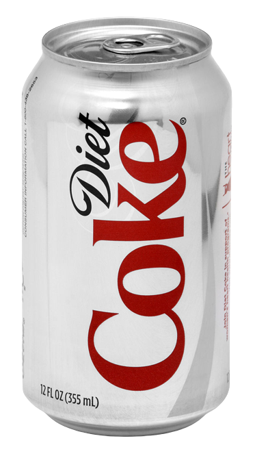

diet coke
an unwavering commitment to the perfect beverage.
an unwavering commitment to the perfect beverage.
a deep appreciation for cinema's most distinctive leading man.
tiny plates for a tiny person.
an unexpected passion for pastoral pursuits.
a roast eagerly provided by chatgpt: "Oh, Sheereen—your Goodreads 'Read' shelf reads like a self‑congratulatory syllabus for 'How to Look Deep While You Signal Virtue.' You swing wildly from classic high‑brow darlings (Virginia Woolf's lyrical existential navel‑gaze in The Waves) to sprawling fantasy door‑stoppers (The Great Hunt, The Dragon Reborn) that you gush over until a dragon finally shows up (10 pages of dragon POV? Heaven forbid!). You'll wax poetic about the crushing emotional weight of First Love, then spend paragraphs dissecting gender essentialism in Death's End like you've uncovered the secret sin of sci‑fi. Meanwhile, your nonfiction queue is a tour through every colonialism hot take imaginable—Zionist Colonialism in Palestine, King Leopold's Ghost, Under the Banner of Heaven—each dutifully critiqued for not being woke enough. And let's not forget your rollercoaster obsession with Cixin Liu: you'll worship it as 'art unmatched by a million lifetimes,' only to rage‑quit over plot holes and one‑dimensional women. In short, your taste is less a coherent literary identity and more a high‑brow buffet of Instagram‑approved profundity—with a side of relentless overanalysis."
Shireen will gush over The Room Next Door's chic NYC aesthetic while bluntly declaring Emilia Pérez "bad and boring," proving her movie‑quality scale is calibrated entirely to personal vibe checks. And she can sum up Taxi Driver with a single pop‑culture quip ("Jess Mariano would love this movie") just as easily as she delivers heartfelt praise for arthouse oddities, making her taste as delightfully unpredictable as her one‑line reviews.